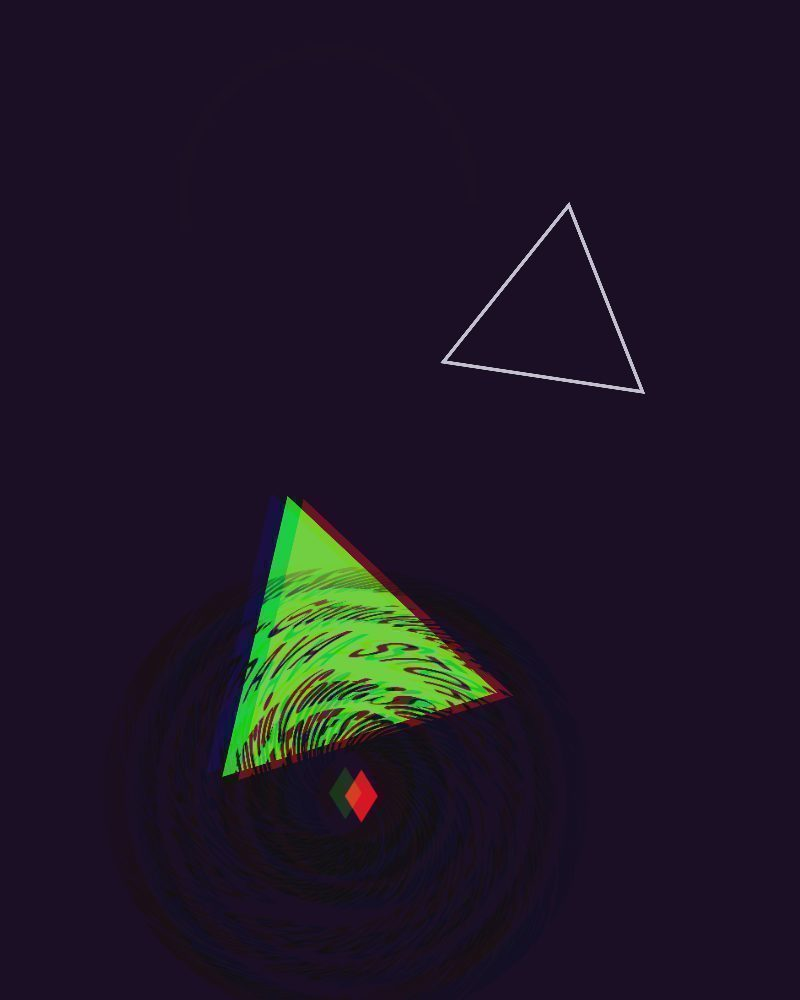

Giorno 164

Documento: tipo di storia
ho letto "Cristianesimo"; "storia" per me gira a vuoto; mi sta vicino a filosofia; ricerca "storia" (approfondire): Chi decide che cos'è storia?; sferzata: quasi niente, un segno nell'angolo
Oggi: storia. Ho letto "Cristianesimo"; "storia" per me gira a vuoto; mi sta vicino a filosofia; ricerca "storia" (approfondire): Chi decide che cos'è storia?; sferzata: quasi niente, un segno nell'angolo.
Da Wikipedia: «chiesa ortodossa».
Ho tagliato (2 volte), messo una forma geometrica (3 volte), seminato una ricetta, sfasa.
Storia ≈ pretesto. Pretesto: tipo di discarico. Storia ideato life (fonte: Epoca (periodico)).
Ha retto: Tiene i miei criteri (60%).
È caduto: Troppo liscio, sa di schermo.
come ne ho discusso con me stesso — la tengo
formale (pro, 1.25): Fuori centro quanto basta: c'è una forza che tira. — regge
occhio (pro, 1.50): Parla soprattutto per punti: una lingua sola, chiara. — regge
occhio (pro, 1.00): Le diagonali (52%) mettono tutto in caduta. — regge
memoria (contro, 0.10): La mano si ripete: taglia ancora una volta. — cade
conservatore (pro, 1.71): Tiene i miei criteri (60%). — regge
intenzione (pro, 0.75): Viene da: Cristianesimo. — regge
coerenza (pro, 1.71): Parla con le tavole di prima su "storia": stessa famiglia, un passo più in là. — regge
formale (pro, 1.25): C'è una struttura: una cosa comanda e attorno c'è spazio. — regge
pubblico (pro, 1.00): Si legge: si capisce cosa sto facendo. — regge
materia (contro, 1.25): Troppo liscio, sa di schermo. — cade